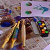
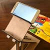
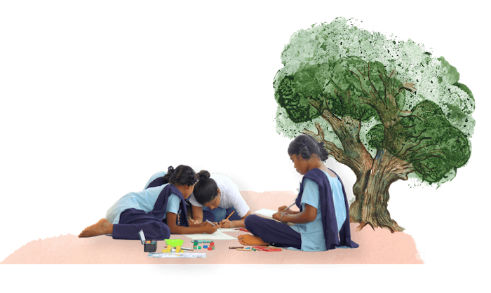

Call for Stories
The LeTS team sends out a call for original stories from workshop participants

We select stories that lend themselves to visual storytelling
LeTS Workshop (4-5 days)
There are as many variants in this part of the workshop as there have been workshops! They
have most of the following elements in common.
Form groups for story telling
Teach storyboarding (how do you tell a story in images)
select key frames and explore illustration techniques.
past workshops have experimented with pencil and poster paints, and with using found materials like grass, leaves and rocks to create forms, which often became the protagonsists of the stories
teach page design and word-image relationships, and ideas of balance, filled vs empty space Each student typically illustrates one sentence or one page keeping context in mind
Back At LeTS
Instructors bring scanned images back to the studio for cleanup and artwork refinement.
The LeTS team translates the books into English and place text on cleaned illustrations on the pages
that
were
scanned prior to writing text.
Select choice of paper and binding. Earlier experiements with binding have included accordion-style and
map-style folds, in addition to traditional methods. The books are printed on heavy paper with vibrant
colours.
Invite a voiceover artist to read and record the story. Several well-known professional
voice-over artists have
lent their voice to our narrations.
Add a "fingerprint" of each page of the book, along with the corresponding voice-over for each page to
the
mobile app. We don't want the image to appear on a screen. Instead, we like the book to be part of the
experience of listening to the story, so the mobile phone camera is made to point to the printed page,
and
the
app instantly recognizes the appropriate LeTS book and the correct page, based on recognizing the
essential
fingerprint features of the image. This works even when parts of the book are occluded by a child's
hands,
and
across a wide range of lighting.
Create animated shorts of the story with voiceover, music and highlighted captions. Very few
books are selected
for this stage, for it is a most time-consuming activity.
We measure proficiency levels by recording children reading the story from subtitles. Much of
the learning here
is meta-learning and not quantifiable, such the boost of confidence in seeing a high-quality end-result
of
one's
labours, the newly acquired belief that one's stories are of interest to others
Dissemination
Send copies back to library of partner school where the workshop was held, and copies to other schools
that
have
partnered with LeTS. The intent is to foster an exchange of such boooks between schools and libraries on
an
ongoing basis. A book written in village Aina in Maharashtra is enjoyed by a school in Himachal Pradesh.
We
are
giddy
about such cross-pollination!
